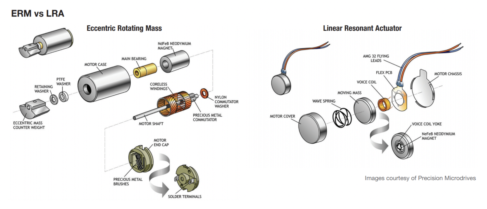

Overall Design Considerations
Some of the most important characteristics for wearables to encourage adoption include ease of use and the ability for the user to "wear and forget" the device. Tackling those two requirements from a mechanical standpoint means having a light-weight design that is intuitive to use and easy to put on.
We met these requirements by designing an easy to open clasp that allows users to remove the device without sliding it off their limbs. Additionally we use elastic fabric straps in between the vibrating modules to accommodate different sizes while maintaining equal spacing between the haptic sensations.
Motor Selection
Haptic feedback cues can come in a variety of forms, the most popular being ERM (eccentric rotating mass) and LRA (linear resonance actuator), these two types of vibrating actuators both have their benefits and trade-offs. While ERMs were historically the popular option, the rise of smartphones has lead to low cost LRAs. ERMs rely on an eccentric mass attached to a motor shaft, as the motor speeds up the eccentric mass generates vibrations in the radial direction. This technology is commonly found in older smartphones and game controllers. LRA actuators rely on a voice coil and resonating mass that produce vibrations normal to surface they are mounted on.
We chose LRAs due to their lower power consumption, faster response time and compact size. ERM solutions would be easier to implement but don't provide the level of control we required for this project.
Ergonomics and Comfort
Ergonomics and comfort are crucial requirements when designing a wearable device, even small weighs become noticeable and will cause fatigue if you need to exert yourself to support them. A wearable product can also become uncomfortable over time if the contact surface is irritating on your skin or if there are sharp edges that cause pinch points. Minimizing the device weight and adding foam pads were two ways we improved the comfort of the device.
Mounting Considerations
While deciding on mounting we prototyped a variety of solutions including low-tack adhesives and Velcro. The vibrations induced during use and the varying amount of stress and elongation that the parts experienced made these solutions a risk. The final iteration opted to use carabineer clips that attach to flexible hemmed loops in series to form a chain. This solution provides us with the modularity and flexibility that a low-tack adhesive or Velcro would offer but with more rigidity and reliability.
Summary
In summary, Articul8 has employed a series of features to improve the feel, look and user experience of its device. Further mechanical improvements include improving the wire harness to hide cables and prevent damage to the interconnects and reducing the overall size of each daughterboard enclosure.